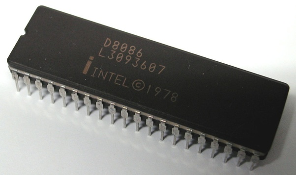
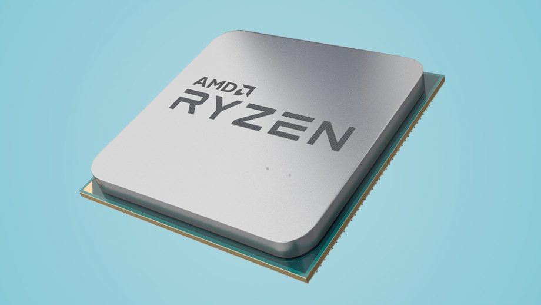

prosessor
Prosessoren er hjernen i datamaskinen. Hastigheten på en CPU er mellom 2 - 4 GHz for nye maskiner.
Intel
Intel er et firma som produserer prosessor-kjerner. Grunnlagt i 1968 - laget intel 4004 CPI, 4 bits cpu. Dagens CPUer er 64 bit. For 5-6 år siden var standard størrelse 32 bit (tall på 4294967296) Dagens CPU kan jobbe med tall på 2^64 = 18446744073709551616 
AMD
AMD (Advanced Micro Devices) laget sin første CPU 8080 AM9080 (en klone av intel 8080) 
ARM
Acorn (Advanced) RISC (Reduced Instructuon Set Computer) Machine. RISC CPUer har få og enkle instruksjoner (i motsetning til Intel). Hver insturksjon skal ta minst mulig tid. Kompliserte betegninger består av mange instruksjoner.